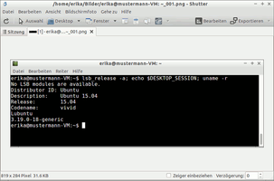
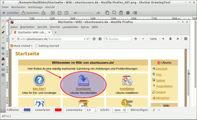
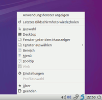
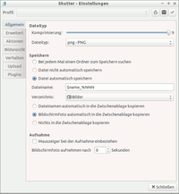
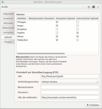

Shutter
Dieser Artikel wurde für die folgenden Ubuntu-Versionen getestet:
Ubuntu 16.04 Xenial Xerus
Ubuntu 14.04 Trusty Tahr
Zum Verständnis dieses Artikels sind folgende Seiten hilfreich:
Shutter  , früher GScrot, ist ein Werkzeug zur Aufnahme von Bildschirmfotos. Es bietet viele Funktionen und integriert sich gut in den GNOME- und Xfce-Desktop.
, früher GScrot, ist ein Werkzeug zur Aufnahme von Bildschirmfotos. Es bietet viele Funktionen und integriert sich gut in den GNOME- und Xfce-Desktop.
Shutter kann den gesamten Bildschirm, eine rechteckige Auswahl, ein einzelnes Fenster, Bereiche eines Fensters (z.B. eine bestimmte Schaltfläche) oder eine Webseite aufnehmen. Beim Bildformat kann zwischen den Formaten PNG (mit Kompressionsstufen), JPG (mit Qualitätsstufen) und BMP gewählt werden. Damit die Bedienung nicht zu hektisch wird oder um bestimmte Bildschirmelemente, wie etwa Menüs, aufzunehmen, kann eine Zeitverzögerung eingestellt werden.
Dateinamen können mit Platzhaltern erstellt werden und eine zusätzliche verkleinerte Kopie, ein so genanntes Thumbnail, kann automatisch generiert werden. Den Bildschirmfotos können mit Hilfe der Plugins Effekte hinzugefügt werden. Das fertige Bildschirmfoto kann mit einem frei wählbaren Programm geöffnet, in die Zwischenablage kopiert oder gedruckt werden. Zusätzlich können die Aufnahmen zu Image-Hostern und FTP-Servern hochgeladen werden. Dazu werden alle Bilder einer Sitzung übersichtlich in Reitern aufgelistet.
Shutter kann auch normale Bilddateien öffnen und diese dann bearbeiten oder hochladen.
Shutter kann sowohl über das Dashboard als auch über HUD aufgerufen werden. Es besteht zudem die Möglichkeit, unter Unity ein Applet in das Panel einzufügen.
|  |  |
| Shutter | Editor |
Installation¶
Shutter ist in den offiziellen Paketquellen enthalten. Das Programm kann direkt über das folgende Paket installiert [1] werden:
shutter (universe)
 mit apturl
mit apturl
Paketliste zum Kopieren:
sudo apt-get install shutter
sudo aptitude install shutter
PPA¶
Shutter wird in Launchpad gepflegt. Daher kann man auch ein "Personal Package Archiv" (PPA) [2] zur Installation nutzen, falls man Wert auf die jeweils aktuellste Version legt.
Adresszeile zum Hinzufügen des PPAs:
ppa:shutter/ppa
Hinweis!
Zusätzliche Fremdquellen können das System gefährden.
Ein PPA unterstützt nicht zwangsläufig alle Ubuntu-Versionen. Weitere Informationen sind der  PPA-Beschreibung des Eigentümers/Teams shutter zu entnehmen.
PPA-Beschreibung des Eigentümers/Teams shutter zu entnehmen.
Damit Pakete aus dem PPA genutzt werden können, müssen die Paketquellen neu eingelesen werden.
Nach dem Aktualisieren der Paketquellen erfolgt die Installation wie oben angegeben.
Fremdpaket¶
Von den Entwicklern werden
DEB-Pakete  angeboten.
Die Pakete können für und Ubuntu 14.04
heruntergeladen werden.
Nachdem man sie für die korrekte Ubuntuversion und Architektur geladen hat, müssen DEB-Pakete noch installiert werden.
angeboten.
Die Pakete können für und Ubuntu 14.04
heruntergeladen werden.
Nachdem man sie für die korrekte Ubuntuversion und Architektur geladen hat, müssen DEB-Pakete noch installiert werden.
Hinweis!
Fremdpakete können das System gefährden.
|  |
| Panel |
Bedienung¶
Aufnahme eines Bildschirmfotos¶
Shutter kann aus dem jeweiligen Hauptmenü heraus gestartet werden:
"Zubehör -> Shutter"
Um Shutter aus einem Terminal oder dem Ausführen-Dialog via Alt + F2 heraus zu starten, dient folgender Befehl [4]:
shutter
Das Programm öffnet sich zunächst als Fenster im Vordergrund, kann aber mit einem  -Klick auf das Tray-Icon minimiert werden. Verweilt man mit dem Mauszeiger auf einer Einstellungsoption im Fenster, so wird eine ausführliche Beschreibung eingeblendet.
-Klick auf das Tray-Icon minimiert werden. Verweilt man mit dem Mauszeiger auf einer Einstellungsoption im Fenster, so wird eine ausführliche Beschreibung eingeblendet.
Maus¶
Mit einem  -Klick auf das Tray-Icon öffnet sich ein Kontextmenü, in dem man eine Aufnahme auslösen kann. Dabei werden die zuvor im Hauptfenster von Shutter gemachten Einstellungen benutzt. Bei "Auswahl" kann ein rechteckiger Bereich des Desktops und bei "Fenster" ein einzelnes Fenster ausgewählt werden. Einzelne Bereiche eines Fenster (z.B. Schaltflächen) können mit Hilfe der Funktion "Bereich" aufgenommen werden. "Web" fotografiert eine vollständige Internetseite ab (siehe auch Problembehebung), während "Bildschirm" den ganzen Inhalt des Monitors als Bild speichert.
-Klick auf das Tray-Icon öffnet sich ein Kontextmenü, in dem man eine Aufnahme auslösen kann. Dabei werden die zuvor im Hauptfenster von Shutter gemachten Einstellungen benutzt. Bei "Auswahl" kann ein rechteckiger Bereich des Desktops und bei "Fenster" ein einzelnes Fenster ausgewählt werden. Einzelne Bereiche eines Fenster (z.B. Schaltflächen) können mit Hilfe der Funktion "Bereich" aufgenommen werden. "Web" fotografiert eine vollständige Internetseite ab (siehe auch Problembehebung), während "Bildschirm" den ganzen Inhalt des Monitors als Bild speichert.
|  |
| Tastatureinstellungen |
Tastatur¶
Shutter kann auch direkt mit Tasten(-kürzeln) ausgelöst werden. Dazu geht man im Shutter-Fenster zum Menüpunkt "Bearbeiten -> Einstellungen -> Tastatur" (siehe Bild rechts). So können auch Bildschirmfotos gemacht werden, wenn kein Zugriff auf den Desktop besteht, z.B. bei Spielen.
Ab Version 0.90.1 ist dieser Menüpunkt "Tastatur" nicht mehr enthalten. Hier erfolgen die Einstellungen direkt über die (allgemeinen) Einstellungen zum Tastaturmenü.
Bildschirmfoto bearbeiten¶
Shutter bietet einen eingebetteten Editor, um aufgenommene Bildschirmfotos direkt mit einfachen Anmerkungen zu versehen. So können Rechtecke, Ovale, (Freihand-) Linien, Texte und Grafiken eingefügt werden, um z.B. bestimmte Bereiche einer Aufnahme hervorzuheben. Um den Editor nutzen zu können, muss das folgende Paket installiert sein:
libgoo-canvas-perl (universe)
mit apturl
Paketliste zum Kopieren:
sudo apt-get install libgoo-canvas-perl
sudo aptitude install libgoo-canvas-perl
|  |
| Upload |
Bildschirmfoto hochladen¶
Shutter bietet die Möglichkeit, die Aufnahmen direkt zu Image-Hostern oder frei definierbaren FTP-Servern hochzuladen. Die automatisch erzeugten Links können leicht in Foren, Wikis etc. wiederverwendet werden.
Start-Parameter¶
Folgende Parameter können beim Start von Shutter verwendet werden:
| Start-Parameter | |
| Paramter | Beschreibung |
--full | Startet Shutter im "Bildschirm" Modus |
--selection | Startet Shutter im "Auswahl" Modus |
--window | Startet Shutter im "Fenster" Modus |
--section | Startet Shutter im "Bereich" Modus |
--min_at_startup | Startet Shutter minimiert im System-Tray |
--clear_cache | Leert den Cache (u.a. werden die Plugins neu geladen) |
--debug | Ausführliche Fehlermeldungen auf der Kommandozeile |
--disable_systray | Deaktiviert das Tray-Icon |
--help | Kommandozeilen-Hilfe anzeigen |
Grundeinstellungen¶
Platzhalter¶
Für den Dateinamen können Platzhalter verwendet werden. Hier ist eine Liste der gebräuchlichsten Platzhalter. Eine vollständige Liste der Datum- und Zeitplatzhalter findet sich zum Beispiel auf opengroup.org .
| Platzhalter | |
| Parameter | Beschreibung |
$w | Bildbreite |
$h | Bildhöhe |
%Y | Jahr |
%m | Monat |
%d | Tag |
%A | Wochentag |
%NN | Counter (Anzahl der N gibt die Anzahl der Stellen an) |
Plugins¶
Mit Hilfe der Plugins kann man auf die eigenen Screenshots einfache Effekte anwenden. Dazu gehören unter anderem Schlagschatten, Kantenrundung, Polaroid, 3D-Rahmen, Sepia- und Graustufeneffekte. Eine vollständige Liste der Plugins findet man im Hauptfenster von Shutter unter "Einstellungen -> Plugins".
Problembehebung¶
Links¶
Projektvorstellung in Ikhaya, 04/2010
HotShots - ebenbürtige Alternative zu Shutter
Bildschirmfotos
 Programmübersicht
Programmübersicht
- Erstellt mit Inyoka
-
 2004 – 2017 ubuntuusers.de • Einige Rechte vorbehalten
2004 – 2017 ubuntuusers.de • Einige Rechte vorbehalten
Lizenz • Kontakt • Datenschutz • Impressum • Serverstatus -
Serverhousing gespendet von